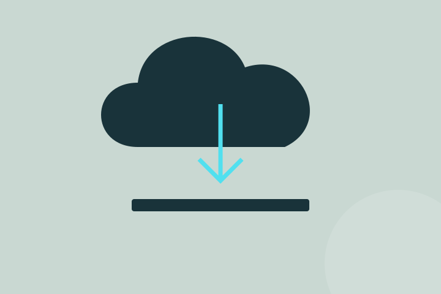

Parti dai requisiti dell’applicazione.
Disponibilità, dati trattati e modalità d’uso orientano le scelte di infrastruttura. Non tutti i prodotti hanno bisogno della stessa architettura: complessità e costo devono restare proporzionati al servizio.
Pensa al prossimo rilascio.
Ambienti separati e procedure ripetibili rendono più chiaro il passaggio dallo sviluppo all’uso. Registrare le modifiche e osservare il comportamento dell’applicazione aiuta a individuare problemi dopo un aggiornamento.
Prepara il recupero.
Un backup è utile se sai come ripristinarlo. Definisci quali dati recuperare, chi interviene e quali tempi sono accettabili. Queste scelte rendono più concreta la discussione su affidabilità e manutenzione.
Scopri come affrontiamo questi temi nei nostri servizi di sviluppo software, dati e AI.
Torna al blog